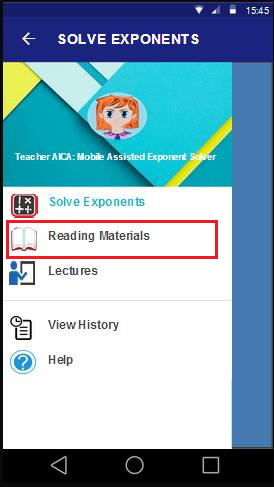
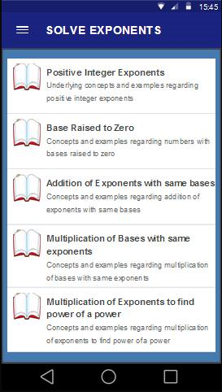
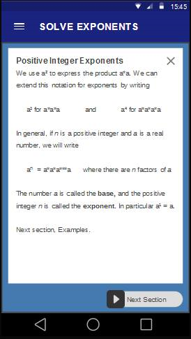

The application sports a considerable amount of reading materials about laws of exponents for student review and study.
Topics are sorted accordingly based on skill sets that the student needs to learn in order for him or her to understand the more advanced topics.
In this Manual wiil help you to understand how to use the reading Materials Section.
You just only follow the this step to guid you.

after you tap the Navigation Menu,
tap "Reading Materials"

After you top the Reading Materials, you will see this screen
that you can choose a topic you want to read. For example, you want to read a topic about positive Integer Exponent
you top it.

Now this will you see, reading materials about Positive Integer Exponent
and top the Next Section to view the next discussion and/or Examples.
If you to read more, just go back to the reading materials topic and choose another topic.